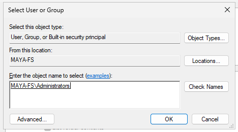
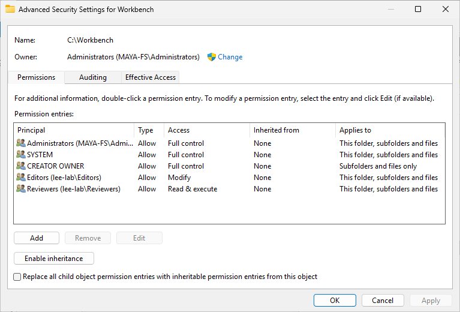
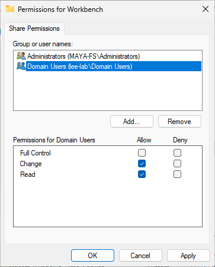
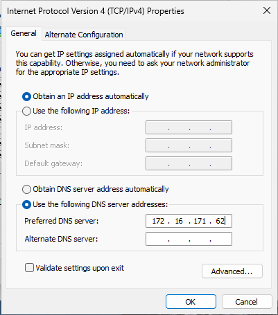

Overview
Preview the four screenshots
Your team is preparing an event. Everyone needs the bulletin. Only the editors should see the draft on Samba. On Windows Server, reviewers should be able to read the workbench without changing it. Use the same domain accounts on both servers.
What you need
Name your VMs before configuration
Use your first name on all three VMs and your last name in the AD domain. Use letters A–Z and omit spaces and punctuation. If needed, shorten the first name to 11 letters so -W11 fits the Windows computer name limit. This guide uses Maya Lee as its example. The computers are maya-dc, MAYA-FS, and MAYA-W11, and the domain is lee-lab.internal. Substitute your own names in the setup, DNS lookups, and share paths.
On Debian, set the hostname before provisioning Samba. Replace maya with your first name.
sudo hostnamectl set-hostname maya-dcOn Windows 11, use Settings → System → About → Rename this PC and set the -W11 name. On Windows Server, use Server Manager → Local Server, click the current computer name, then choose Computer Name → Change and set the -FS name. Restart both before joining the domain.
| VM | Name | Role |
|---|---|---|
| Fresh Debian 13 (Trixie) | maya-dc |
Samba domain controller, DNS, and two small practice shares |
| Windows Server 2022 or 2025 with Desktop Experience | MAYA-FS |
Domain member and Windows file server |
| Windows 11 Education | MAYA-W11 |
Domain member and test client |
Use your own VMs on one shared private NAT network. In VirtualBox, choose NAT Network for all three VMs and select the same network. Check that the VM clocks agree before joining. Avoid bridging the lab to the campus network. The 40-minute target starts after VM and package preparation. Check that the three VMs can reach each other and give Debian a stable IPv4 address. Write down the Debian address and the current DNS server for Internet lookups. Use local administrator accounts on Windows for setup. The Windows Server VM starts as a standalone server.
On Debian, install these packages before timing the lab:
sudo apt update
sudo apt install samba-ad-dc krb5-user bind9-dnsutils
Press Enter to accept the defaults if Kerberos setup asks for a realm or servers. You will replace its configuration during the lab.
Create the domain
10 minOn Debian, open /etc/hosts with sudo nano /etc/hosts. Add a line with your Debian VM’s IPv4 address, full name, and short name. Remove any 127.0.1.1 mapping for this VM’s old or new hostname. Keep 127.0.0.1 localhost. Use your own IP address, first name, and last-name domain in place of the example below.
192.168.50.10 maya-dc.lee-lab.internal maya-dc
Prepare Samba and run the interactive setup:
sudo systemctl disable --now smbd nmbd winbind
sudo systemctl mask smbd nmbd winbind
sudo mv /etc/samba/smb.conf /etc/samba/smb.conf.orig
sudo samba-tool domain provision --interactive
disable --now stops the standalone services and keeps them from starting at boot. mask prevents them from starting while the domain controller owns their duties. Moving the original configuration gives Samba a free filename for its new configuration.
| Prompt | Enter |
|---|---|
| Realm | Your last-name domain in uppercase, such as LEE-LAB.INTERNAL |
| Domain (NetBIOS) | LAB. Enter this explicitly to keep account names such as LAB\alice. |
| Server role | dc |
| DNS backend | SAMBA_INTERNAL |
| DNS forwarder | Your upstream DNS server's IP. Enter none if you only need lab names. |
| Administrator password | Choose and record a strong lab password. Use it only for this lab. |
Install the Kerberos configuration that Samba generated.
sudo cp /var/lib/samba/private/krb5.conf /etc/krb5.conf
Point this dedicated lab VM at its own Samba DNS. First, check which resolver Debian is using.
ls -l /etc/resolv.conf
systemctl is-active systemd-resolved
On a typical Debian install, /etc/resolv.conf is a regular file and the service reports inactive. If the service reports active, run sudo systemctl disable --now systemd-resolved before continuing. Samba will provide DNS for this VM.
Back up the resolver file and open a new one:
sudo mv /etc/resolv.conf /etc/resolv.conf.orig
sudo nano /etc/resolv.conf
Enter the following two lines. In Nano, save with Ctrl+O, Enter, then exit with Ctrl+X.
nameserver 127.0.0.1
search lee-lab.internal
sudo systemctl unmask samba-ad-dc
sudo systemctl enable --now samba-ad-dc
hostname
host -t SRV _ldap._tcp.lee-lab.internal
host maya-dc.lee-lab.internal
Windows uses the SRV record to find maya-dc.lee-lab.internal on port 389 and the A record to find its IPv4 address. Compare both lookups with the example below. Your address should match your Debian VM. If either lookup fails, check systemctl status samba-ad-dc and the address in /etc/hosts before joining Windows.
Create two domain users and two groups. Enter a separate lab password at each user prompt. addmembers takes the group name first and the username second.
sudo samba-tool user create alice
sudo samba-tool user create bob
sudo samba-tool group add Editors
sudo samba-tool group add Reviewers
sudo samba-tool group addmembers Editors alice
sudo samba-tool group addmembers Reviewers bob
Join Windows
8 minDo this on Windows Server and Windows 11. Start the second VM's join while the first restarts.
- Open Control Panel → Network and Internet → Network and Sharing Center → Change adapter settings. Right-click the active adapter and select Properties.
- Open Internet Protocol Version 4 (TCP/IPv4). Keep the existing IP settings. Select Use the following DNS server addresses. Enter the Debian VM's IPv4 address as the preferred DNS server and leave Alternate blank. Click OK in both properties windows.
- Open the Computer Name tab in System Properties using the path for your VM.
- On Windows Server, open Server Manager → Local Server and click the Workgroup link.
- On Windows 11, search Start for About your PC. Under Related links, click Domain or workgroup.
- Select Change → Domain, enter your last-name domain, such as
lee-lab.internal, and click OK. When prompted, sign in withLAB\Administratorand the password created on Debian. - When Windows welcomes you to your domain, restart. Open System Properties → Computer Name again on each VM. Verify each computer name and your last-name domain.
If the join cannot find the domain, follow the domain DNS checks.
Optional CLI (untested)
Optional CLI (untested on the lab VMs). The GUI steps above are the main path. After setting adapter DNS, these PowerShell checks resolve the domain controller and display the computer's join status.
Resolve-DnsName maya-dc.lee-lab.internal
Get-CimInstance Win32_ComputerSystem | Select-Object Name, Domain, PartOfDomain
Publish Samba shares
5 minBack on Debian, make two folders and add a small file to each.
sudo mkdir -p /srv/samba/bulletin /srv/samba/drafts
echo 'Event starts at 10 AM.' | sudo tee /srv/samba/bulletin/event.txt
echo 'Draft schedule for editors.' | sudo tee /srv/samba/drafts/draft.txt
Open /etc/samba/smb.conf with sudo nano /etc/samba/smb.conf. Add these sections at the bottom. Keep the existing domain configuration and built-in shares.
[Bulletin]
path = /srv/samba/bulletin
valid users = "@LAB\Editors" "@LAB\Reviewers"
read only = yes
[Drafts]
path = /srv/samba/drafts
valid users = "@LAB\Editors"
read only = yes
The @ marks a group name. Use one backslash between LAB and each group name. valid users controls who can open each share. Both shares are read-only.
sudo testparm -s
sudo systemctl restart samba-ad-dc
-s makes testparm print the verified configuration without asking you to press Enter. Check for Loaded services file OK and both share names before restarting. The domain controller hosts these two read-only practice shares.
Set Windows permissions
7 minOn Windows Server, sign in as LAB\Administrator.
- In File Explorer, create C:\Workbench. Right-click the folder and open Properties → Security → Advanced.
- Select Disable inheritance → Convert inherited permissions into explicit permissions. Keep SYSTEM and the server’s local Administrators entry. If the entry is missing, see how to look up the local group. Try Local vs. domain group lookup in Troubleshooting to see why the location matters. Remove every Users or Authenticated Users entry you see. There can be two MAYA-FS\Users entries. Do this only on the new Workbench folder.

In Locations, choose your own -FScomputer. - Select Add → Select a principal and enter
LAB\Editors. Select Check Names, then OK. Set Type to Allow, Applies to to This folder, subfolders and files, and tick Modify. Select OK. - Add
LAB\Reviewersthe same way. Select Read & execute. Windows also selects List folder contents and Read. Leave Write and Modify clear. Apply the changes.
The Editors and Reviewers entries have the expected NTFS access. The pilot dialog displays the group names with lee-lab. - Inside Workbench, create
event.txtwith the line Update the event plan here. Creating it now lets the file inherit the folder permissions. - Open Workbench → Properties → Sharing → Advanced Sharing. Tick Share this folder, leave the name Workbench, and open Permissions. Add
LAB\Domain Usersand allow Change and Read. Select Add → Locations → MAYA-FS → OK. EnterAdministrators, choose Check Names, and confirm it resolves toMAYA-FS\Administrators. Allow Full Control for that group. Remove Everyone, then apply.
Workbench share permissions on MAYA-FS. Domain Users has Change and Read.


In Windows Defender Firewall with Advanced Security → Inbound Rules, check for an enabled File and Printer Sharing (SMB-In) rule for the Domain profile. On the Server 2025 lab VM, File and Printer Sharing (Restrictive) (SMB-In) was already enabled for Domain. If the Domain rule is disabled, enable it. Keep the firewall enabled.
The share allows domain users to request changes. The NTFS access control list (ACL) in the Security tab controls who can change files. Both the share permissions and the NTFS ACL must allow an action for it to succeed over SMB.
Optional CLI (untested)
Optional CLI (untested on the lab VMs). Use this as an alternative to the folder and share steps above on a fresh VM. Open PowerShell as administrator. Set the Domain firewall rule with the GUI.
New-Item -ItemType Directory -Path C:\Workbench
icacls C:\Workbench /grant:r "SYSTEM:(OI)(CI)F" "BUILTIN\Administrators:(OI)(CI)F" "LAB\Editors:(OI)(CI)M" "LAB\Reviewers:(OI)(CI)RX"
icacls C:\Workbench /inheritance:r
Set-Content -Path C:\Workbench\event.txt -Value 'Update the event plan here.'
New-SmbShare -Name Workbench -Path C:\Workbench -ChangeAccess 'LAB\Domain Users' -FullAccess 'BUILTIN\Administrators'
Test as Alice and Bob
10 minOn Windows 11, choose Other user and sign in as LAB\alice. Paste each path below into File Explorer's address bar. Then sign out and repeat as LAB\bob. The first sign-in for each user can take a minute while Windows creates their profile. Signing out closes the previous user’s SMB sessions. The next sign-in also loads that user’s current group membership. Try When does Windows see a group change? in Troubleshooting. File Explorer may show event or draft without the .txt extension.
Show which VM and user ran the test
While signed in as Alice or Bob, open Command Prompt from Start and run:
hostname
whoamiKeep Command Prompt visible for each capture. The two commands show your -W11 name and lab\alice or lab\bob. Arrange it with File Explorer and the test result so all are readable in a single capture. Open Command Prompt before the Drafts test so the denial dialog can stay open.
| Path | Alice, an Editor | Bob, a Reviewer |
|---|---|---|
\\maya-dc.lee-lab.internal\Bulletin |
Open event.txt |
Open event.txt |
\\maya-dc.lee-lab.internal\Drafts |
Open draft.txt |
Access denied |
\\maya-fs.lee-lab.internal\Workbench |
Open and edit event.txt, then save |
Open event.txt, make a test edit, and try to save it to the same file in Notepad. Expect a permission error. |
If Notepad opens Save As for Bob, keep the Workbench folder and event.txt filename. Choose Save, then choose Yes if asked to replace the file. Windows 11 can say You do not have permission to open this file during the save attempt. Dismiss the dialog and discard the unsaved edit.
Optional CLI (untested)
While signed in as Bob, run the following in PowerShell. It attempts to append one line. Expect an access-denied error.
Add-Content '\\maya-fs.lee-lab.internal\Workbench\event.txt' 'Reviewer edit test'After Alice saves, close the event.txt tab in Notepad and reopen the file from the Workbench share. Arrange the windows so Notepad shows the saved text and File Explorer’s address bar shows both the server and share for Screenshot 3. For Screenshot 4, open \\maya-dc.lee-lab.internal as Bob, then open Drafts. If Windows asks for network credentials, enter LAB\bob and Bob’s password once. Leave the Access is denied message and the server and selected share visible. Keep the password field empty in the capture, then select Cancel. If Windows reports a missing network path, check DNS and the share path.
If your results differ from the table, check Workbench write permissions or Workbench connectivity.
Add your four screenshots to the submission template. Use the results table to check your work. Explain why Bob can read Workbench but cannot save even though Domain Users has Change permission on the share. Then explain how Samba’s valid users setting affects Bob’s access to Drafts.
Troubleshooting
Windows cannot find the domain or share path
- Check that the VMs are connected to the same private NAT network and have IPv4 addresses on that network. Keep automatic IP addressing on Windows if your lab uses DHCP.
- Check the Windows adapter’s IPv4 properties. Set Preferred DNS server to your Debian VM’s IPv4 address and leave Alternate DNS server blank.
- Repeat the LDAP SRV and host A lookups on Debian. The SRV record should point to
maya-dc.lee-lab.internalon port 389. The A record should show your Debian address.


Explore: When does Windows see a group change?
A domain account cannot sign in
At the Windows 11 sign-in screen, choose Other user and enter LAB\alice or LAB\bob. Check the lab password and make sure the Windows and Debian clocks agree. If either user’s group membership changed, sign out and sign back in.
Explore: Local vs. domain group lookup
Check Names cannot find Administrators
Active Directory Users and Computers shows the domain’s Administrators group in its Builtin container. Workbench uses the MAYA-FS member server’s local Administrators group. Microsoft’s Administrators group reference
Typing BUILTIN\Administrators while searching lee-lab.internal can trigger a location error. Keep the existing local Administrators entry in Workbench’s Security permissions. If it is missing, open Add → Select a principal → Locations, choose MAYA-FS, enter Administrators, and select Check Names. It should resolve to MAYA-FS\Administrators. Allow Full control on this folder, subfolders, and files. Use the same location when adding Administrators in the share permissions. Use your last-name domain, such as lee-lab.internal, as the search location for Editors and Reviewers.
-FS computer.Alice can open Workbench but cannot save
Check that you signed in as LAB\alice. On Windows Server, confirm that Domain Users has Change and Read in Sharing → Advanced Sharing → Permissions. Then open Security → Advanced and confirm that Editors has Modify on the folder, subfolders, and files.
Neither user can open Workbench
Check the share path \\maya-fs.lee-lab.internal\Workbench and the Windows Server computer name and domain. Confirm that the client and server use Debian for DNS. If the server name resolves, check the Domain-profile SMB-In rule and confirm that Workbench is shared.
Bob sees a permission error opening Drafts
This is the expected result. The Drafts share’s valid users permits Editors, and Bob belongs to Reviewers. Windows 11 can show Enter network credentials with Access is denied after Bob enters his credentials. Use the Screenshot 4 example to check what your dialog should show.